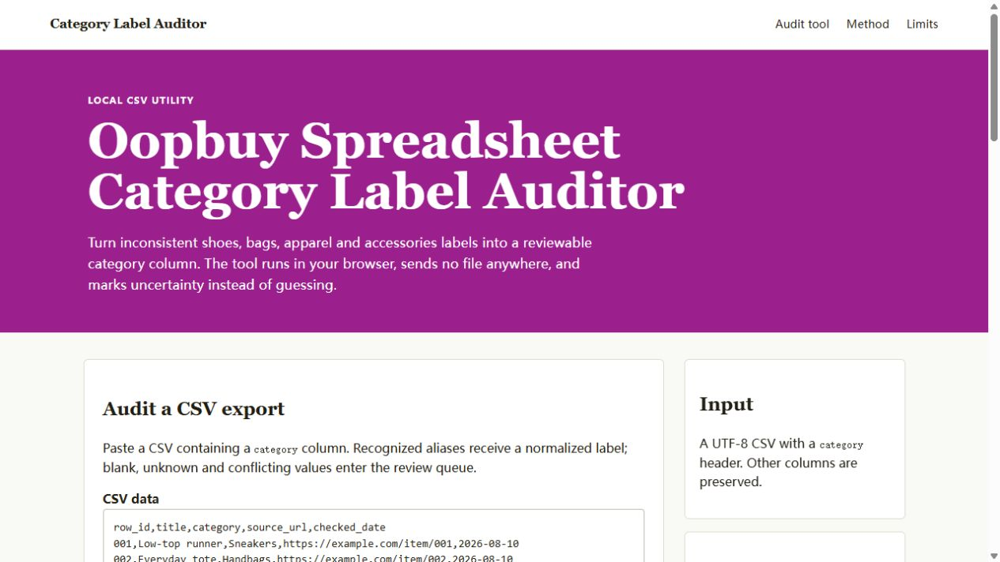

Audit a CSV export
Paste a CSV containing a category column. Recognized aliases receive a normalized label; blank, unknown and conflicting values enter the review queue.
| Row | Input | Normalized | Status | Reason |
|---|
A category audit that leaves a trail
- Normalize known aliases. For example, sneakers becomes
shoesand handbags becomesbags. - Keep ambiguity visible. A value such as
shoes / bagsis not silently reduced to one category. - Export reason codes. The output adds normalized category, status and reason columns for later review.

Adjust aliases for your own notes
The defaults cover broad spreadsheet groupings rather than a product catalog. Edit the map before auditing if your notes use different terms.
What the result does not prove
A normalized label does not verify a product, source URL, price, stock level, option, image or QC result. It only makes the category field easier to review. Re-open current source pages before using time-sensitive information.
The sample uses invented placeholder records and example.com URLs. This project does not ship a product directory or claim category counts.